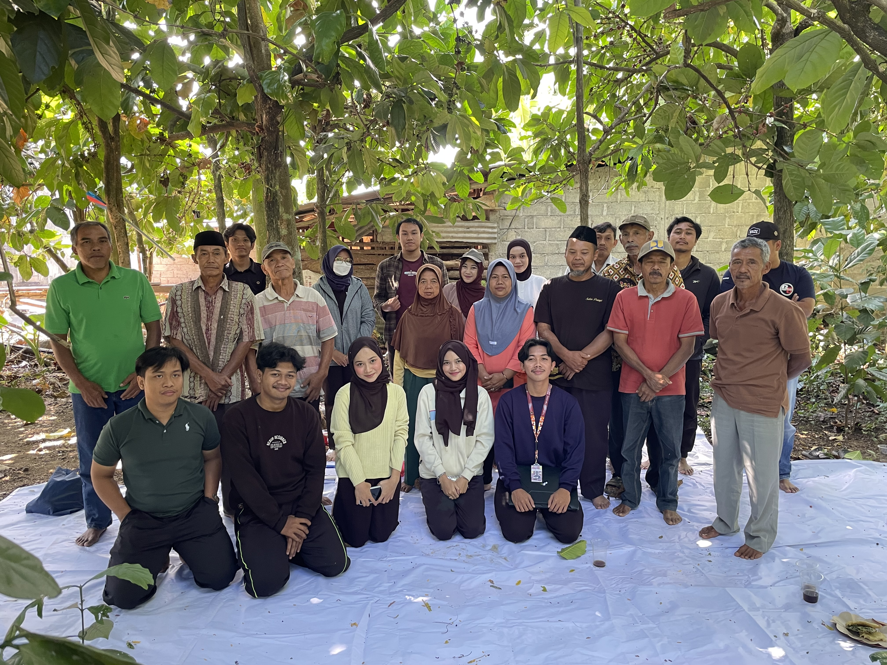

Masa Depan Kopi Seboto
Solusi pertanian presisi dan budidaya kopi berkelanjutan yang dirancang khusus untuk meningkatkan kesejahteraan petani desa Seboto.
Tentang SEBOTANI
SEBOTANI hadir sebagai jembatan teknologi IoT (Internet of Things) untuk perkebunan kopi tradisional. Kami mengintegrasikan sensor pH tanah dan kelembapan udara untuk memastikan setiap bibit pohon kopi mendapatkan nutrisi dan perawatan yang tepat terbaik. Website ini merupakan bentuk persembahan kami Tim PPK Ormawa HMP PTI UMS dan kerja sama baik dari Tim Penelitian Pengabdian Ormawa HMP PTI UMS.
Alur Sistem
3 Langkah Presisi
Sensor Cerdas
Pemasangan sensor pH, kelembapan, dan suhu secara langsung di area tanam.
Analisis Data
Pemrosesan data real-time di cloud untuk mendeteksi kebutuhan tanaman.
Aksi Presisi
Penyemprotan otomatis dan rekomendasi pupuk yang disesuaikan.
Fitur Utama
Kelembapan Tanah
Monitoring kadar air tanah secara akurat untuk irigasi optimal.
Suhu Udara
Pantau mikro-iklim lahan.
pH Tanah
Jaga tingkat keasaman ideal.
Kualitas Gas & Air
Monitoring lingkungan komprehensif.
Dampak Nyata
Kenaikan Hasil Panen
Hemat Air & Pupuk
"Memberdayakan petani lokal dengan data presisi untuk masa depan kopi Indonesia yang lebih hijau."